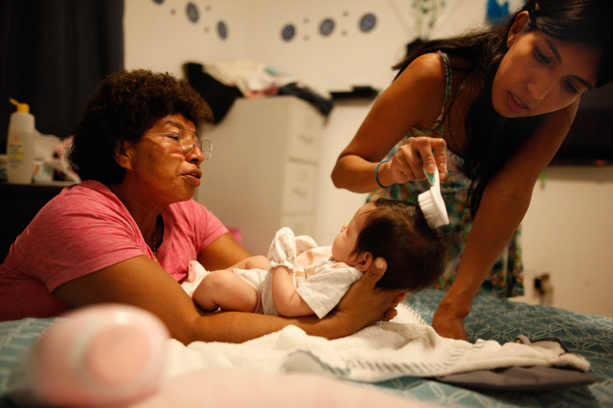
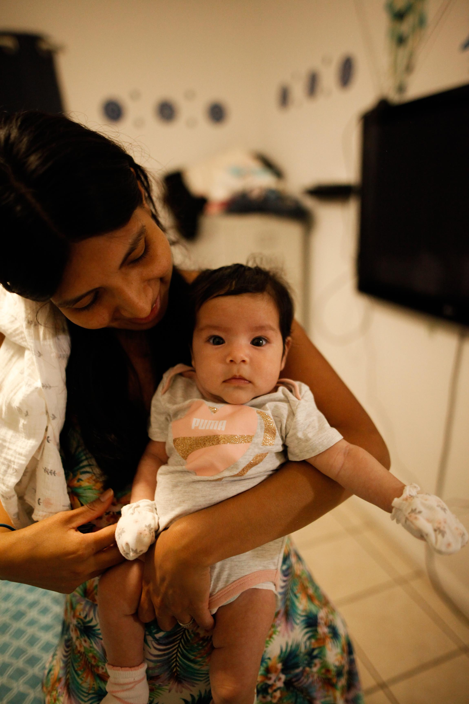
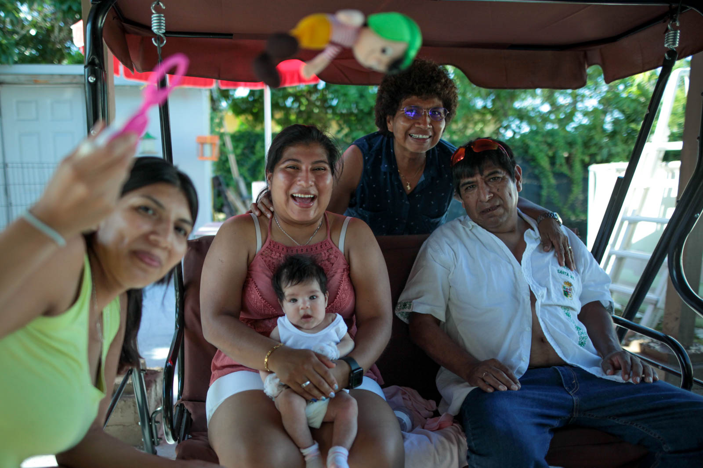
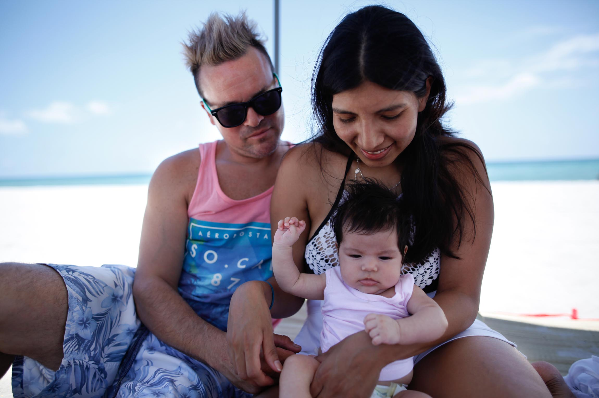

Recién Nacida
Para una familia que creció fracturada, debido a los caprichos y abusos de algunas personas, el verse junta hoy; como lo está en estas fotos, se siente como un acto de protesta. Se siente como una enmienda a las heridas y ofensas del pasado. No hay forma de recuperar todo el tiempo que perdimos, pero eso no importa ya que la simple presencia de una recién nacida nos hace sentir más cerca que nunca.




